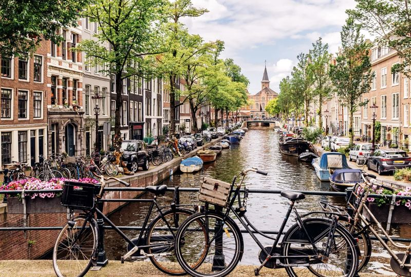

Article
Read the article, then answer the questions below.
Cities That Didn't Exist 50 Years Ago
When we think of a great city, we often imagine somewhere very old — full of history, with buildings that took centuries to build. But not every famous city grew up slowly. Some of today's most impressive cities are almost brand new.
Dubai is a good example. Fifty years ago, it was a small town next to the sea, known mainly for fishing and trade. Today, it has some of the tallest buildings in the world, huge shopping centres, and islands built in the shape of a palm tree. The change happened extremely quickly, mostly because of money from oil and a government that wanted to attract tourists and businesses from all over the world.
Songdo, in South Korea, is even newer. Construction only began in 2003, on land that used to be part of the sea. Engineers filled in the water with earth and rock to create solid ground, and then built an entire city on top of it — offices, parks, schools, and thousands of apartments, all planned before a single person moved in. Songdo was designed to be a "smart city," where computers control the traffic lights, the rubbish collection, and even the electricity in each building.
Brasília, the capital of Brazil, was built even earlier, in just a few years during the late 1950s. The government wanted a brand-new capital city, away from the crowded coast, so architects designed one from nothing. Seen from above, the whole city is shaped like an aeroplane, or a bird with its wings spread out.
These cities show that a place doesn't need hundreds of years of history to become somewhere important. Sometimes, all it takes is a plan, a lot of money, and the will to build something completely new.
Comprehension
1. According to the article, what was Dubai known for fifty years ago?
2. According to the article, what was Songdo built on?
3. According to the article, what makes Songdo a "smart city"?
4. According to the article, why was Brasília built?
5. According to the article, what shape is Brasília when seen from above?
6. What is the main point of the article?
Great places to be
Match each photo to the city it shows. Choose your answer below the photo, then click the card to reveal the answer — it locks in once you flip it.
Known for Times Square, Central Park, and the Statue of Liberty.
Famous for its beaches, the Christ the Redeemer statue, and Carnival.
Home to the world's tallest building and man-made palm-shaped islands.

Famous for its canals, cycling culture, and narrow historic houses.
Known for its Opera House, Harbour Bridge, and beautiful beaches.
One of the world's largest cities, famous for its futuristic skyline.
Mini writing (at least 50 words)
Which of these cities would you most like to visit, and why? Use ideas like: excellent shopping, friendly people, great food, lots to do, unusual buildings, lively festivals, spectacular scenery.
Reading 1 — Before you read
You're about to read a passage about cities around the world. First, decide if each of these is a good (G) or bad (B) aspect of a city.
1. friendly inhabitants
2. fast public transport
3. crowded streets
4. a high crime rate
5. people in a hurry
6. a relaxed lifestyle
Now read the passage below quickly.
The world's friendliest city
A team of social psychologists from California has spent six years studying the reactions of people in cities around the world to different situations. The results show that cities where people have less money generally have friendlier populations. Rio de Janeiro in Brazil, which is often known for its crime, comes out top, and the capital of Malawi, Lilongwe, comes third.
But what makes one city friendlier than another? The psychologists from California State University say it has got more to do with environment than culture or nationality.
They carried out a study into the way locals treated strangers in 23 cities around the world. The team conducted their research through a series of tests, where they dropped pens or pretended they were blind and needed help crossing the street.
The study concludes that people are more helpful in cities with a more relaxed way of life such as Rio. While they were there, researchers received help in 93 percent of cases, and the percentage in Lilongwe was only a little lower. However, richer cities such as Amsterdam and New York are considered the least friendly. Inhabitants of Amsterdam helped the researchers in 53 percent of cases and in New York just 44 percent. The psychologists found that, in these cities, people tend to be short of time, so they hurry and often ignore strangers.
adapted from an article by Victoria Harrison, BBC News
Quick check
1. Which four cities are mentioned in the passage?
2. Which city is the friendliest, according to the study?
Reading 1 — Table completion
Look back at the passage in Task 2 as you work through these.
Which good/bad aspects from Task 2 are actually mentioned in the passage?
Match the phrases
Match each phrase from the table below with the phrase from the passage that means the same thing.
Now complete the table
Choose ONE WORD from the passage for each answer.
| City | Positive aspects | Negative aspects | % help received |
|---|---|---|---|
| Rio de Janeiro | friendly inhabitants more lifestyle |
People don't have so much money. Has reputation for |
93% |
| Amsterdam & New York | richer | People have little don't pay attention to |
Amsterdam: 53% New York: 44% |
Discuss
1. Are you surprised that people in cities with less money are friendlier? Why / why not?
2. What is the friendliest place you have ever visited?
3. How friendly are people in your town or city to visitors? Give examples.
Reading 2 — Before you read
You're about to read a passage about Costa Rica.
The happiest country in the world
Children growing up in Costa Rica are surrounded by some of the most beautiful and diverse landscapes in the world. Preserving tropical rainforests isn't Costa Rica's only success, because the government also makes sure everyone has access to health-care and education. So when the New Economics Foundation released its second Happy Planet Index, Costa Rica came out number one. The index is a ranking of countries based on their impact on the environment and the health and happiness of their citizens.
According to Mariano Rojas, a Costa Rican economics professor, Costa Rica is a mid-income country where citizens have plenty of time for themselves and for their relationships with others. "A mid-income level allows most citizens to satisfy their basic needs. The government makes sure that all Costa Ricans have access to education, health and nutrition services." Costa Ricans, he believes, are not interested in status or spending money to show how successful they are.
Created in 2008, the Happy Planet Index examines happiness on a national level and ranks 143 countries according to three measurements: their citizens' happiness, how long they live (which reflects their health), and how much of the planet's resources each country consumes. According to researcher Saamah Abdallah, the Index also measures the outcomes that are most important, and those are happy, healthy lives for everyone.
adapted from Yes! Magazine
Quick check
1. Who is Mariano Rojas?
2. Who is Saamah Abdallah?
Reading 2 — Note completion
Choose ONE WORD OR A NUMBER from the passage in Task 4 for each gap.
The Happy Planet Index
Year started:
Number of countries it lists:
Measures each country's happiness according to:
- its effect on the (i.e. the quantity of the Earth's that it uses);
- the of the population (i.e. how long people live);
- how happy its are.
Discuss
Which of these things do you think are important in making people happy, and which are not so important? Why?
being healthy · earning a lot of money · having a good education · having good relationships · living in a beautiful place
What other things do you think matter?
Vocabulary boost
Key words from today's readings — match each word to its correct definition.
Five unusual towns
Read each short passage, then match each town to the sentence that best describes its main feature.
1. Petra, Jordan
Hidden in the desert mountains of southern Jordan, Petra is a city that is over 2,000 years old. Its most famous buildings were carved directly into pink sandstone cliffs by the Nabataean people, who once controlled important trade routes across the region. Visitors must walk through a narrow rock canyon to reach the main entrance. Because of its rose-coloured stone, Petra is often called "the rose city." Today it is one of the most visited ancient sites in the world.
2. Songdo, South Korea
Songdo did not exist before 2003. It was built on land reclaimed from the sea, near the city of Incheon. Every part of Songdo was carefully planned before construction began, from the parks to the office towers. The city uses smart technology to control traffic, waste collection, and electricity automatically. Because almost nothing there is more than twenty years old, Songdo is often described as one of the most modern cities on Earth.
3. Venice, Italy
Venice is built across more than a hundred small islands in a lagoon on the northeast coast of Italy. Instead of roads, the city is connected by canals, and instead of cars, people travel by boat, including the famous gondolas. The buildings rest on wooden posts driven deep into the mud below the water. Venice has existed for well over a thousand years, though rising sea levels now threaten to flood parts of the historic city.
4. Ittoqqortoormiit, Greenland
Ittoqqortoormiit is one of the most isolated towns in the world, home to fewer than 400 people. It sits on the edge of the world's largest fjord system, surrounded by mountains and sea ice for most of the year. For several months, the town can only be reached by helicopter or by ship, since the harbour freezes over completely in winter. Polar bears are occasionally seen near the edge of town.
5. Brasília, Brazil
Brasília became Brazil's capital in 1960, after being built from nothing in under four years. The government wanted to move the capital away from the crowded coast and into the country's interior. Architects designed the entire city before a single building was constructed, laying it out in the shape of an aeroplane when viewed from above. Because of its unusual planned design, Brasília is recognised as a UNESCO World Heritage Site.
Match each town to its main feature
Writing Activity:
This is a Speaking Part 3-style question, but today you'll answer it in writing — a great way to practise using the language and ideas from today's tasks before you have to say them out loud.
Do you think every city must be modernized, or should some stay preserved with its historical buildings?
Write at least 80 words.
Speaking Part 1 — Your Town
Jot down a few notes for each question if it helps, then record your answer. You only get one attempt per question, so make sure you're ready before you start recording.
Useful words: peaceful · lively · historic · industrial · scenic · compact · spread out · welcoming
Useful phrases:
- "My hometown is a fairly… place, with…"
- "It's known for its…"
- "It's a mix of old and new, since…"
- "Compared to other towns, it's quite…"
- "One thing that stands out is…"
Useful words: since birth · recently · permanently · temporarily · my whole life · a decade
Useful phrases:
- "I've lived there for… years now."
- "I've lived there my whole life."
- "I moved there… years ago."
- "I only recently moved there, so…"
- "I've been living there on and off since…"
Useful words: convenient · friendly · affordable · green spaces · community · atmosphere
Useful phrases:
- "One thing I really like is…"
- "What I enjoy most is…"
- "I love… because…"
- "It has a great sense of…"
- "I particularly appreciate the…"
Useful words: crowded · noisy · polluted · limited · outdated · expensive
Useful phrases:
- "One thing I'm not so keen on is…"
- "If I'm honest, I don't really like…"
- "It can be a bit… at times."
- "Something that bothers me is…"
- "I sometimes wish there were more…"
Useful words: landmark · district · neighbourhood · attraction · hidden gem
Useful phrases:
- "I'd say the most interesting part is…"
- "There's a… that's really worth seeing."
- "Tourists often visit… because…"
- "What makes it special is…"
- "It's famous for…"
Useful words: developed · expanded · modernised · declined · transformed
Useful phrases:
- "It's definitely changed since…"
- "Not really, it's stayed pretty much the same."
- "A lot has changed, especially…"
- "It's become much more… over the years."
- "Compared to when I was young, it's…"
Useful words: settle down · relocate · career opportunities · family ties
Useful phrases:
- "I think I would, because…"
- "Probably not, since…"
- "It depends, but…"
- "I'd love to stay because…"
- "I might move eventually, mainly because…"
Useful words: attractions · sightseeing · visitors · tourism industry
Useful phrases:
- "Yes, quite a few tourists visit because…"
- "Not really, since…"
- "It's becoming more popular recently because…"
- "People mainly come to see…"
- "It's not really on the tourist map, but…"
Useful words: reliable · efficient · congested · limited · well-connected
Useful phrases:
- "It's pretty good/limited, since…"
- "Most people get around by…"
- "Public transport is fairly…"
- "Traffic can be a problem, especially…"
- "It's easy to get around by…"
Useful words: expand · develop · urbanise · modernise · grow
Useful phrases:
- "I imagine it will…"
- "It's probably going to become more…"
- "I expect more… to be built."
- "It might lose some of its… character."
- "I hope it will…"
Reading — Urban Farming in Paris
Adapted from an authentic IELTS Reading passage. Read it, then answer the questions below.
Urban Farming in Paris
In Paris, urban farmers are trying a soil-free approach to agriculture that uses less space and fewer resources. Could it help cities face the threats to our food supplies?
On top of a striking new exhibition hall in southern Paris, the world's largest urban rooftop farm has started to bear fruit. Strawberries that are small, intensely flavoured and resplendently red sprout abundantly from large plastic tubes. Peer inside and you see the tubes are completely hollow, the roots of dozens of strawberry plants dangling down inside them. From identical vertical tubes nearby burst row upon row of lettuces; near those are aromatic herbs, such as basil, sage and peppermint. Opposite, in narrow, horizontal trays packed not with soil but with coconut fibre, grow cherry tomatoes, shiny aubergines and brightly coloured chards.
Pascal Hardy, an engineer and sustainable development consultant, began experimenting with vertical farming and aeroponic growing towers – as the soil-free plastic tubes are known – on his Paris apartment block roof five years ago. The urban rooftop space above the exhibition hall is somewhat bigger: 14,000 square metres and almost exactly the size of a couple of football pitches. Already, the team of young urban farmers who tend it have picked, in one day, 3,000 lettuces and 150 punnets of strawberries. When the remaining two thirds of the vast open area are in production, 20 staff will harvest up to 1,000 kg of perhaps 35 different varieties of fruit and vegetables, every day. 'We're not ever, obviously, going to feed the whole city this way,' cautions Hardy. 'In the urban environment you're working with very significant practical constraints, clearly, on what you can do and where. But if enough unused space can be developed like this, there's no reason why you shouldn't eventually target maybe between 5% and 10% of consumption.'
Perhaps most significantly, however, this is a real-life showcase for the work of Hardy's flourishing urban agriculture consultancy, Agripolis, which is currently fielding enquiries from around the world to design, build and equip a new breed of soil-free inner-city farm. 'The method's advantages are many,' he says. 'First, I don't much like the fact that most of the fruit and vegetables we eat have been treated with something like 17 different pesticides, or that the intensive farming techniques that produced them are such huge generators of greenhouse gases. I don't much like the fact, either, that they've travelled an average of 2,000 refrigerated kilometres to my plate, that their quality is so poor, because the varieties are selected for their capacity to withstand such substantial journeys, or that 80% of the price I pay goes to wholesalers and transport companies, not the producers.'
Produce grown using this soil-free method, on the other hand – which relies solely on a small quantity of water, enriched with organic nutrients, pumped around a closed circuit of pipes, towers and trays – is 'produced up here, and sold locally, just down there. It barely travels at all,' Hardy says. 'You can select crop varieties for their flavour, not their resistance to the transport and storage chain, and you can pick them when they're really at their best, and not before.' No soil is exhausted, and the water that gently showers the plants' roots every 12 minutes is recycled, so the method uses 90% less water than a classic intensive farm for the same yield.
Urban farming is not, of course, a new phenomenon. Inner-city agriculture is booming from Shanghai to Detroit and Tokyo to Bangkok. Strawberries are being grown in disused shipping containers, mushrooms in underground carparks. Aeroponic farming, he says, is 'virtuous'. The equipment weighs little, can be installed on almost any flat surface and is cheap to buy: roughly €100 to €150 per square metre. It is cheap to run, too, consuming a tiny fraction of the electricity used by some techniques.
Questions 1–3 — Sentence completion
Choose NO MORE THAN TWO WORDS AND/OR A NUMBER from the passage for each answer.
1. Vertical tubes are used to grow strawberries, and herbs.
2. There will eventually be a daily harvest of as much as in weight of fruit and vegetables.
3. It may be possible that the farm's produce will account for as much as 10% of the city's overall.
Questions 4–7 — Table completion
Choose ONE WORD ONLY from the passage for each answer.
| Growth | Selection | Sale | |
|---|---|---|---|
| Intensive farming | wide range of used techniques pollute air |
quality not good varieties chosen that can survive long |
receive very little of overall income |
| Aeroponic urban farming | no soil used nutrients added to water, which is recycled |
produce chosen because of its | — |
Paraphrase hunt
Click a phrase below, then click through the matching word(s) in the passage above, one at a time, in order — some answers are a single word, others are a short phrase. A correct match locks in green; a wrong attempt shows in bold red and resets, so keep trying.
Day 1 complete! 🎉
All 11 tasks done. Come back tomorrow for the next day.